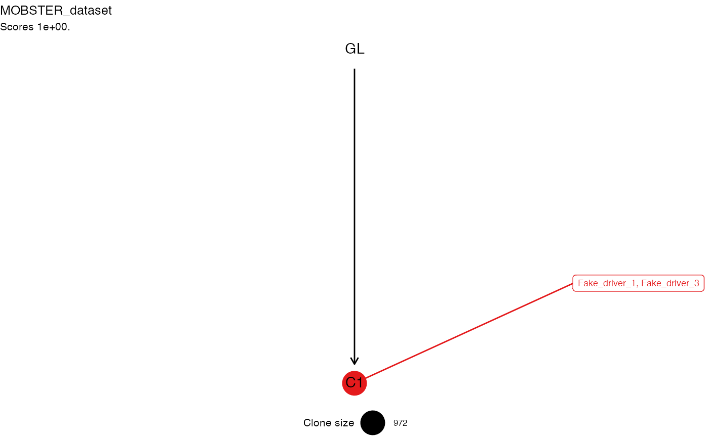
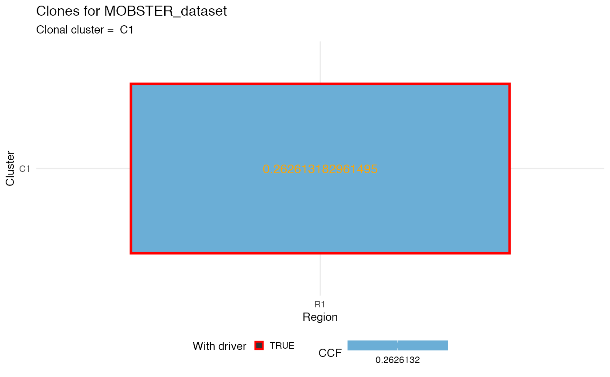
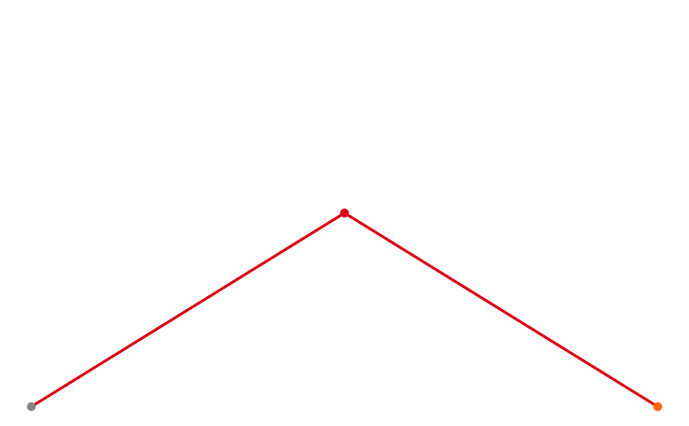
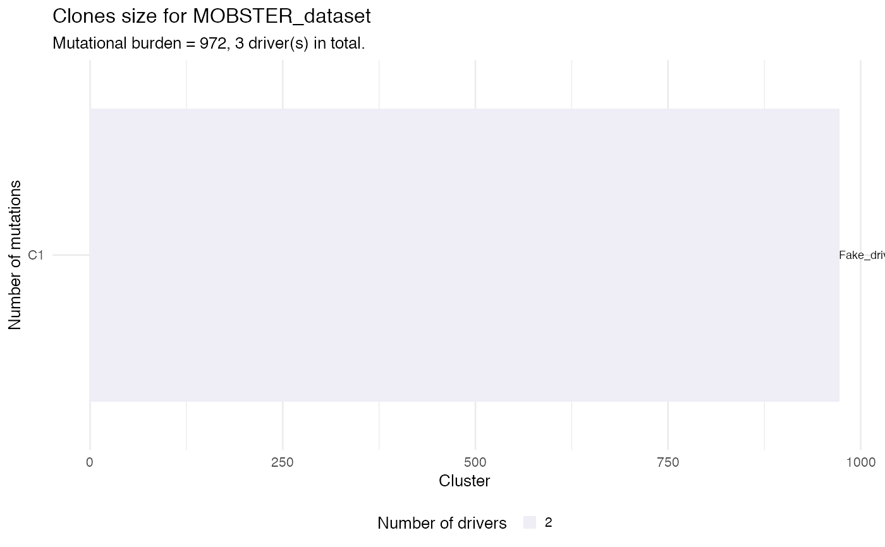

get_clone_trees.RdThis function uses the output fit of MOBSTER
to create a call to ctree (https://caravagn.github.io/ctree/),
a package to create clone trees for cancer evolution models.
Creation of a clone tree requires annotations that are not usually
necessary for just a plain MOBSTER analyses. These annotations report the status of driver
and gene for each one of the input datapoints, and should
be part of data given in input for MOBSTER (so they should be in x$data).
MOBSTER clusters are only used if the come from a Beta distribtutions; that is the tail is removed. The clonal cluster is estimated from the cluster with the highest parameter value for the Beta peak.
The output is the result of calling the constructor ctree::cetrees
on the input clustering results x.
get_clone_trees(x, ...)
| x | A MOBSTER fit. |
|---|---|
| ... | Extra parameters passed to the constructor |
The output of the constructor ctree::cetrees.
# We take one of the released datasets x = mobster::PD4120a_breast_sample$best # Genes are already annotated head(x$data$gene)#> [1] "LOC102723448(dist=8399),CHL1(dist=163705)" #> [2] "LOC102723448(dist=14314),CHL1(dist=157790)" #> [3] "LOC102723448(dist=72916),CHL1(dist=99188)" #> [4] "LOC102723448(dist=84382),CHL1(dist=87722)" #> [5] "LOC102723448(dist=124685),CHL1(dist=47419)" #> [6] "LOC102723448(dist=132721),CHL1(dist=39383)"# Drivers we add, just taken at random from the exonic mutations. # Just print: x$data %>% filter(region == 'exonic') # SETD2 could really be a driver. require(dplyr) genes_list = c('ARHGAP31', 'ABCC5', 'SETD2') x$data = x$data %>% dplyr::mutate( driver = ifelse(region == 'exonic' & gene %in% genes_list, TRUE, FALSE) ) # Get the trees trees = get_clone_trees(x)#> Warning: replacing previous import ‘igraph::%s%’ by ‘matrixcalc::%s%’ when loading ‘ctree’#> Warning: replacing previous import ‘igraph::groups’ by ‘tidygraph::groups’ when loading ‘ctree’#>#> [ ctree ~ generate clone trees for MOBSTER_dataset ] #> Sampler : 10000 (cutoff), 5000 (sampling), 100 (max store) #> # A tibble: 3 x 5 #> cluster R1 nMuts is.clonal is.driver #> <chr> <dbl> <dbl> <lgl> <lgl> #> 1 C2 0.291 1167 FALSE TRUE #> 2 C1 0.521 1740 TRUE TRUE #> 3 C3 0.161 730 FALSE TRUE #> #> ✔ Region R1 ~ #CCF clusters > 1%: 3 #> ✔ Trees per region 2 #> ✔ Hashed trees 2 #> ✔ Structures 2 - search is exahustive #> ✔ Pigeonhole Principle #> ✔ Ranking trees #> ✔ Trees with non-zero sscore 2 storing 2 #>#>#> [ ctree - ctree rank 1/2 for MOBSTER_dataset ] #> #> # A tibble: 3 x 5 #> cluster R1 nMuts is.clonal is.driver #> <chr> <dbl> <dbl> <lgl> <lgl> #> 1 C2 0.291 1167 FALSE TRUE #> 2 C1 0.521 1740 TRUE TRUE #> 3 C3 0.161 730 FALSE TRUE #> #> Tree shape (drivers annotated) #> #> \-GL #> \-C1 :: ARHGAP31, ARHGAP31 #> |-C3 :: SETD2 #> \-C2 :: ABCC5 #> #> Information transfer #> #> ARHGAP31 ---> ABCC5 #> ARHGAP31 ---> ABCC5 #> GL ---> ARHGAP31 #> GL ---> ARHGAP31 #> ARHGAP31 ---> SETD2 #> ARHGAP31 ---> SETD2 #> #> Tree score 0.5 #>#> Warning: Duplicated aesthetics after name standardisation: na.rm#> Warning: Removed 1 rows containing missing values (geom_point).